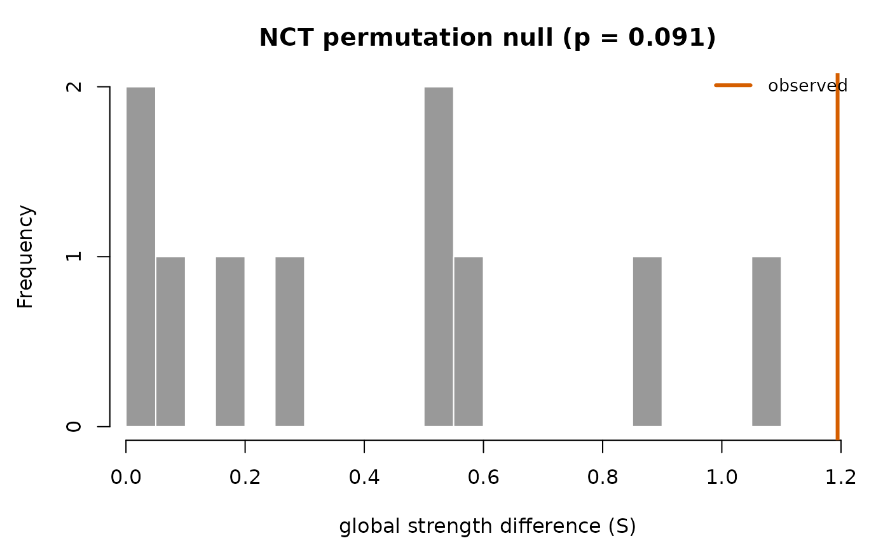
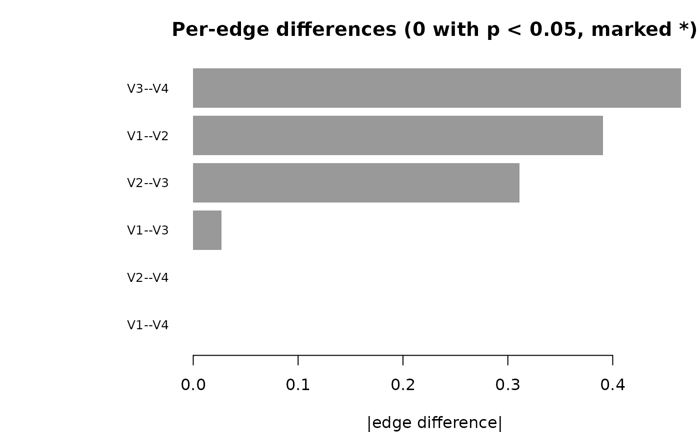

net_compare() tests whether the networks of two groups differ, using the
Network Comparison Test (van Borkulo et al., 2022). It estimates an EBIC
graphical lasso network in each group and compares them on three statistics:
M, the largest difference in any edge weight; S, the difference in global
strength; and E, the difference in each edge.
The groups can be, for example, patients and controls, or the same people at two time points. Networks estimated in two groups differ in their sample estimates even when the population networks are identical, so the test compares the observed differences with those produced by assigning the observations to the two groups at random. M tests network structure invariance and is the largest absolute difference in any edge weight; S tests global strength invariance and is the absolute difference in the sum of the absolute edge weights; E tests the invariance of each edge and is the absolute difference in that edge's weight.
The null distributions of M, S and E are obtained by re-estimating both
networks after each of iter random reassignments of the rows to the two
groups. With paired = TRUE the rows are pairs of measurements of the same
unit, and a permutation swaps the two members of each pair with probability
one half. A p-value is the share of permutations, with the observed data
counted as one of them, whose statistic is at least as large as the observed
one. Options compare signed rather than absolute weights in S
(abs = FALSE, a test of global expected influence), compare the presence
of edges only (weighted = FALSE), and adjust the per-edge p-values for
multiple testing (p_adjust).
It returns the two global tests, read with summary(), and the per-edge
tests, read with as.data.frame().
The test compares partial-correlation networks, so both networks are always
EBIC graphical lassos (ebic_glasso()). For differences between edges or
between centralities within one network, use difference_test(); for the
accuracy of each network on its own, use net_boot().
Usage
net_compare(
data1,
data2 = NULL,
iter = 1000L,
gamma = 0.5,
paired = FALSE,
abs = TRUE,
weighted = TRUE,
p_adjust = "none",
na_method = c("pairwise", "listwise")
)
# S3 method for class 'psychnet_nct'
summary(object, alpha = 0.05, ...)
# S3 method for class 'psychnet_nct'
as.data.frame(x, row.names = NULL, optional = FALSE, alpha = 0.05, ...)
# S3 method for class 'psychnet_nct'
print(x, n = Inf, alpha = 0.05, ...)
# S3 method for class 'psychnet_nct'
plot(x, type = c("strength", "structure", "edges"), alpha = 0.05, ...)Arguments
- data1, data2
Data frames or matrices with the same numeric variables in the same order, one row per observation, holding finite values or
NA. Alternatively,data1can be a psychnet_group estimated from a data set, withdata2naming the two levels to compare as they appear in the grouping column (e.g.c(1, 4); default: the two levels of a two-level group); ordata1anddata2can be two member networks of one psychnet_group, which keep their rows and are compared as that group's levels. A network estimated on its own keeps no data and is refused.- iter
Number of permutations. Default
1000.- gamma
EBIC hyperparameter of the graphical lasso. Default
0.5. For a group, the group's own value is used unlessgammais given.- paired
If
TRUE, row i ofdata1and row i ofdata2are measurements of the same unit. DefaultFALSE, except for a group built withpsychnet(within = ), whose levels are compared paired by person unlesspaired = FALSE; persons observed in only one level are left out.- abs
If
TRUE(default), S compares the sums of absolute edge weights (global strength); ifFALSE, the sums of signed edge weights (global expected influence). M and E always use absolute differences.- weighted
If
FALSE, both networks are reduced to the presence or absence of each edge (1 or 0) before comparison. DefaultTRUE.- p_adjust
Multiplicity adjustment for the per-edge p-values, any method of
stats::p.adjust(). Default"none". M and S are not adjusted.- na_method
"pairwise"(default) or"listwise"handling of missing values; see Details. For a group, the group's own setting is used unlessna_methodis given.- alpha
For the methods: significance level for the
significantcolumn, the*marks and the colouring of edges. Default0.05.- ...
Unused.
- x, object
A
psychnet_nctobject.- row.names, optional
Ignored.
- n
For
print(): number of edges to list, largest difference first. DefaultInf(all).- type
For
plot():"strength"(default) or"structure"draws the permutation distribution of S or M with the observed value and p-value;"edges"draws the observed difference of every edge.
Value
An object of class psychnet_nct. summary() returns the two
global tests as a data frame, one row per test, with columns test
("network structure", and "global strength", or
"global expected influence" when abs = FALSE), statistic ("M",
"S"), observed, p_value and significant (p_value < alpha).
as.data.frame() returns the edge tests, one row per node pair, with
columns from, to, weight_1, weight_2 (the edge in each group's
network; 0 or 1 when weighted = FALSE), difference (statistic E),
p_value (adjusted by p_adjust), p_raw (before adjustment) and
significant (adjusted p_value < alpha).
The object also stores the two estimated networks, the permutation
distributions of M, S and E, the global strength of each group, the
number of rows used in each group, the group names (the argument names,
or the group levels) and the settings. print() shows the two global
tests, the global strength of each group and every edge, largest
difference first, and returns x invisibly; plot() returns x
invisibly.
Details
The two groups must hold the same variables in the same order; non-numeric columns, such as an identifier or a group label, are dropped first.
Missing values follow na_method. "pairwise" (default) keeps every row,
permutes rows as usual, and estimates each network from the
pairwise-complete correlation matrix, projected to the nearest positive
definite correlation matrix, with the median number of jointly observed
rows as the sample size, as ebic_glasso() does. "listwise" first drops
incomplete rows; in a paired design a pair is dropped when either member is
incomplete. Complete data give the same result under both.
A variable without variation in a group, or in a permuted split (a rare binary item can be constant in one), enters that network as an isolated node, as with every estimator in the package. The statistics are then defined in every permutation, so the test remains exact.
The statistics and the permutation scheme are those of
NetworkComparisonTest::NCT(), and the letters M and S follow van Borkulo
et al. (2022).
Functions
summary(psychnet_nct): The two global tests, M and S, one row each.as.data.frame(psychnet_nct): The per-edge tests, one row per node pair.print(psychnet_nct): The global tests, the global strength of each group, and every edge, largest difference first.plot(psychnet_nct): The permutation distribution of S or M with the observed value marked, or the observed difference of every edge (seetype); significant edges are coloured and marked*.
Conditions
psychnet_bad_input for an invalid argument; when the groups' columns
differ in name, order or number, or hold infinite values; when a group
has fewer than three rows or paired groups differ in size; and, for
groups, when the levels are not found or the two networks are not members
of one psychnet_group. psychnet_degenerate_sample when, with
na_method = "pairwise", two variables share fewer than two observed
rows in a group or in a permuted split. psychnet_constant_variable
(warning) when a variable is constant in an observed group;
psychnet_estimator_mismatch (warning) when a group was estimated with
another estimator or settings, or is compared with a gamma or
na_method other than its own; psychnet_rows_dropped (warning) when a
paired comparison of a group leaves out persons observed in only one
level. psychnet_renamed on access to the fields M and S, which the
object does not have; summary() reports both tests.
References
van Borkulo, C. D., van Bork, R., Boschloo, L., Kossakowski, J. J., Tio, P., Schoevers, R. A., Borsboom, D., & Waldorp, L. J. (2022). Comparing network structures on three aspects: A permutation test. Psychological Methods. doi:10.1037/met0000476
See also
difference_test() for differences within one network;
net_boot() for the accuracy of a network; ebic_glasso() for the
estimator; psychnet_group for networks estimated per group.
Examples
set.seed(1)
# group a has a stronger chain than group b
a <- matrix(stats::rnorm(100 * 4), 100, 4) %*% chol(0.5^abs(outer(1:4, 1:4, "-")))
b <- matrix(stats::rnorm(100 * 4), 100, 4) %*% chol(0.2^abs(outer(1:4, 1:4, "-")))
colnames(a) <- colnames(b) <- paste0("V", 1:4)
# iter = 10 keeps the example fast (smallest p = 1/11); use iter >= 1000.
fit <- net_compare(a, b, iter = 10)
fit
#> Network Comparison Test: a vs b
#> 10 permutations, independent groups, n = 100 and 100
#>
#> Test Statistic p
#> M network structure 0.465 0.091
#> S global strength 1.194 0.091
#> a 1.194 vs b 0.000
#> E edges differing 0 of 6
#>
#> Edges, largest difference first
#> Edge a b |diff| p
#> V3 - V4 0.465 0.000 0.465 0.091
#> V1 - V2 0.391 0.000 0.391 0.091
#> V2 - V3 0.311 0.000 0.311 0.182
#> V1 - V3 0.027 0.000 0.027 0.818
#> V1 - V4 0.000 0.000 0.000 1.000
#> V2 - V4 0.000 0.000 0.000 1.000
#>
#> * p < 0.05
print(fit, n = 3) # the three largest edge differences
#> Network Comparison Test: a vs b
#> 10 permutations, independent groups, n = 100 and 100
#>
#> Test Statistic p
#> M network structure 0.465 0.091
#> S global strength 1.194 0.091
#> a 1.194 vs b 0.000
#> E edges differing 0 of 6
#>
#> Largest edge differences (3 of 6)
#> Edge a b |diff| p
#> V3 - V4 0.465 0.000 0.465 0.091
#> V1 - V2 0.391 0.000 0.391 0.091
#> V2 - V3 0.311 0.000 0.311 0.182
#>
#> * p < 0.05
summary(fit)
#> test statistic observed p_value significant
#> 1 network structure M 0.4649198 0.09090909 FALSE
#> 2 global strength S 1.1942892 0.09090909 FALSE
as.data.frame(fit)
#> from to weight_1 weight_2 difference p_value p_raw significant
#> 1 V1 V2 0.39093075 0 0.39093075 0.09090909 0.09090909 FALSE
#> 2 V1 V3 0.02711333 0 0.02711333 0.81818182 0.81818182 FALSE
#> 3 V2 V3 0.31132529 0 0.31132529 0.18181818 0.18181818 FALSE
#> 4 V1 V4 0.00000000 0 0.00000000 1.00000000 1.00000000 FALSE
#> 5 V2 V4 0.00000000 0 0.00000000 1.00000000 1.00000000 FALSE
#> 6 V3 V4 0.46491980 0 0.46491980 0.09090909 0.09090909 FALSE
plot(fit) # permutation distribution of global strength

plot(fit, type = "edges") # per-edge differences
